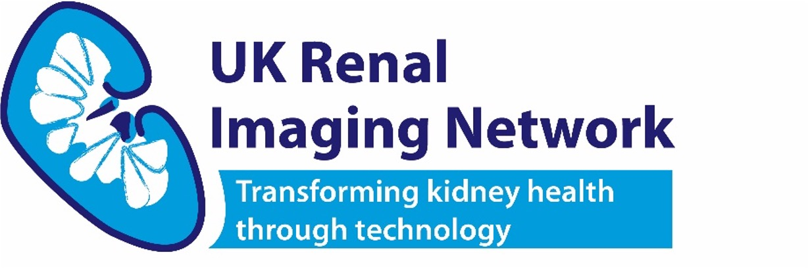

Transforming kidney health through technology
UKRIN brings together UK renal MRI research centres, including physicists, clinicians, and radiologists, to advance imaging methods for kidney disease.
Regular UKRIN meetings bring together researchers to collaborate and share advances.